El Calentamiento Global
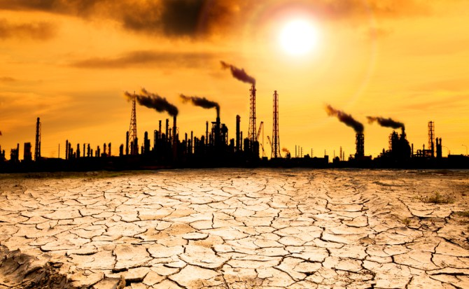
Una de las consecuencias y la más grave de la contaminación ambiental es el calentamiento global que va dejando rasgos negativos a largo plazo; pudiendo acabar con la vida de muchas especies de seres vivos.
Qué es el calentamiento global?
El calentamiento global hace referencia al incremento de la temperatura tanto de la atmósfera como de los océanos pertenecientes al planeta Tierra que ha ido aumentando en tiempos de la actualidad; proyectándose una serie de daños acometidos al futuro.
Los científicos han descrito la seguridad que existe en el que el daño se eleve de tal forma que llegue a las máximas concentraciones de los gases pertenecientes al efecto invernadero; que se agrava además con la deforestación y la quema de combustibles fósiles tales como el petróleo y también el carbón.

Estas consecuencias se van maximizando cada vez en los países desarrollados e industrializados debido a la amplia actividad de fábricas que se van constituyendo durante el día a día.
Así mismo el calentamiento global es dado por múltiples causas; dentro de la que se clasifica como la más importante la emisión constante de dióxido de carbono; siendo este un problema de máxima frecuencia que hoy en día se visualiza como una completa amenaza para la salud del medio ambiente.
Para abarcar las soluciones a este problema hay una buena cantidad de opciones; pero estas únicamente dependen de la mejoría de la actividad humana; creando hábitos saludables y lo más importante; que lleguen a traspasarse de generación en generación; haciendo que se retarde los daños de la capa de ozono y de todo el entorno natural.
Muchos datos certifican el daño al cual el planeta se ha venido enfrentando constantemente y es que con el paso de las décadas; el problema se hace mucho peor sin posibilidades de recuperar su inocuidad general; haciendo que todos los seres humanos vayan pensando en nuevas maneras de conseguir la vitalidad de todos los tipos de hábitats reduciendo las consecuencias del calentamiento global.
Causas del calentamiento global
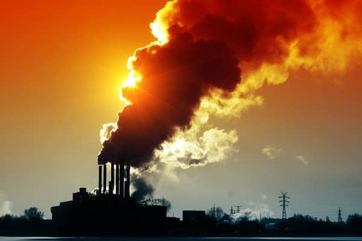
Combustibles fósiles
Esta es una de las causas más importantes que sabe explicar la aparición del calentamiento global con el avance de los años; y tiene que ver de forma explícita con las actividades industriales por medio de fábricas que emanan humos constantes en su zona de trabajo como parte de las fuentes de energía pero que va deteriorando el entorno natural.
Así mismo; el dióxido de carbono en conjunto con la quema de combustibles fósiles como gasolina o carbón incrementan la gravedad de la contaminación y con ello hace énfasis en la consecuencia del calentamiento global.
La disminución de la utilización de los combustibles fósiles puede reducir relativamente la contaminación.
No obstante; se sabe que para la vida humana es necesario su uso en muchos aspectos por lo que el calentamiento de la atmósfera sería un hecho desde siempre; pero la gravedad radica en su exceso lo que ha conllevado al deterioro de la capa de ozono; capa que protege a todos los seres vivos de los rayos solares que llegan a incidir de un modo más directo.
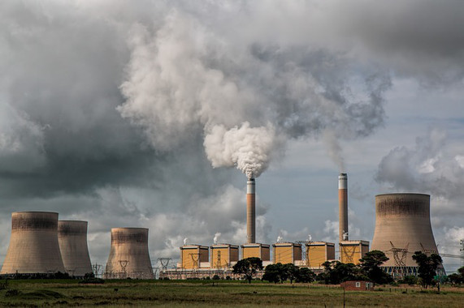
Incendios forestales
Con la frecuencia que sucede debido a la extensa contaminación que existe en todo tipo de ambientes; los incendios forestales se van mostrando como un factor realmente importante al tratarse de evadir o prevenir el calentamiento global.
Con la constancia de estos eventos en la naturaleza; resulta mucho más complicado acabar con el rompimiento de la capa de ozono provocado por el calentamiento global dado a que contribuye en principio a que estos daños se presenten con mayor velocidad y tengan sus efectos con mucha más intensidad que lo estimado según las estadísticas de deterioro ambiental.
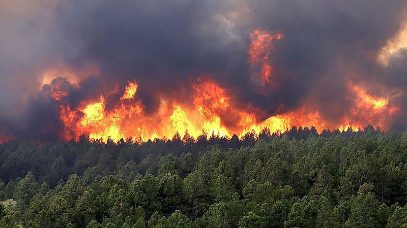
Por si te interesa "Incendio forestal en el Bosque Amazona"
Deforestación
Si bien es cierto; es posible determinar la importancia que tiene la vegetación en todo el ambiente, pues con este no solo se obtiene grandes proporciones de oxígeno en el entorno natural; sino que también significa mucha más vida para todos los seres vivos en su totalidad; teniendo así muchas funciones, desde nutrición hasta utilidades para distintas actividades si se quiere.
Es por ello que con la deforestación no se logra más que adelantar la muerte próxima del planeta y las etapas críticas; debido a que se van restando años de vida cuando hay escasa vegetación o pocos árboles en todos los territorios, provocando la desertificación; sumando otro factor de gran interés a la aparición del calentamiento global.
Dentro de las implicaciones de la deforestación y su relación con el calentamiento global se encuentra la actividad ganadera; pues son seres vivos y a su vez especies que se alimentan de forma exclusiva de la vegetación de los ambientes; esto va contribuyendo a que muchas de las zonas queden desprovistas de este elemento vital y así influir consecuentemente en el calentamiento.

Descomposición de desechos sólidos
La basura es una herramienta muy contribuyente cuando se habla del calentamiento global; ya que con su degeneración y descomposición no solo van dejando rastros negativos según el material del desecho sino que también van provocando incendios forestales; debido a su incidencia con los rayos solares y así van compenetrándose con el calentamiento global; dejando muchos gases en el efecto invernadero como producto de la quema.
Del mismo modo, con la descomposición de la basura puede agregarse la fermentación anaeróbica dada explícitamente en aquellos desechos de tipo orgánico y funcionan como una especie de fertilizante y una buena cantidad de consecuencias en contra del cuidado ambiental.
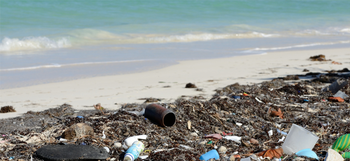
Fertilizantes
El uso no comedido de los fertilizantes nitrogenados va desenlazando consecuencias en su colaboración con el calentamiento global; esto debido a su amplificación sobre el efecto invernadero. Esto se genera; porque su funcionamiento exige una alta cantidad de energía aplicada al suelo cuando emite nitrógeno y donde este último se va elevando hacia la atmósfera.
El resultado de la combinación entre este gas y el oxígeno es un gas del efecto invernadero de mucha más potencia que el resto, pues se asocia a ser 300 veces superior al dióxido de carbono y con ello se va acumulando mucho más calor en la atmósfera.
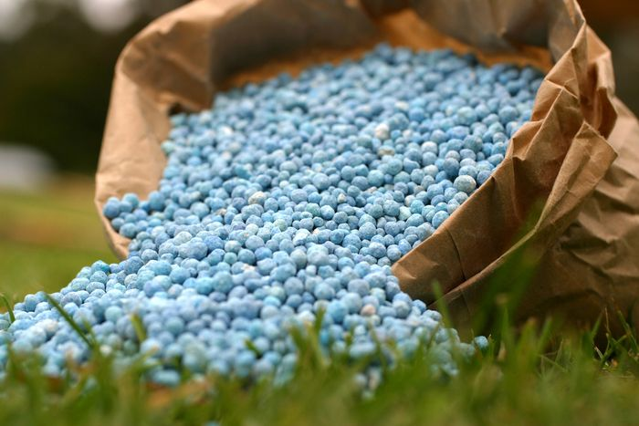
Consecuencias del calentamiento global
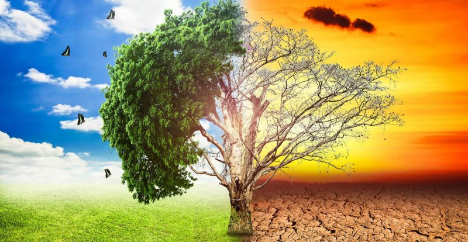
Incremento del nivel del mar
Esto se da como consecuencia de las altas temperaturas que engloban toda la atmósfera; conllevan a que los polos se derritan y por ende el nivel del mar ascienda; lo que a su vez puede llegar a provocar inundaciones, entre otros eventos naturales negativos para todas sus especies.
Especies extintas
Con el cambio de los climas y de los entornos adecuados para la vida; muchas especies tanto animales como vegetales pueden verse afectadas de gran modo llegando a morir en grandes cantidades lo que implicaría la aparición de condiciones de extinción en muchos de los tipos de flora y fauna.
Esto implica que a largo plazo la evolución de las especies se verá truncada debido a la modificación que las actividades del hombre han originado en la selección natural.
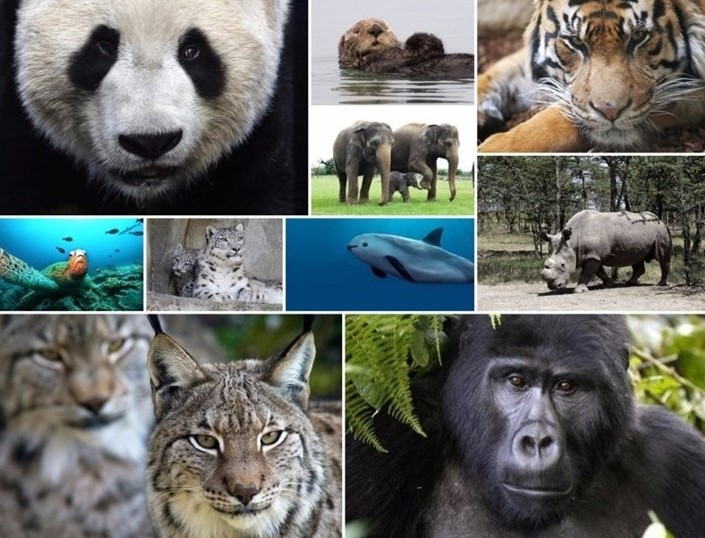
Cambios en el ciclo hidrológico
Gracias al calentamiento global; los procesos hidrológicos y los pasos que indica su ciclo pueden verse relativamente modificados destacando precipitaciones ácidaso lluvia ácida debido a la mezcla de gases implicados en el efecto invernadero; causante fundamental del calentamiento global.
Aumento en la concentración de CO2
Con la constante actividad de las industrias y fábricas; sobre todo en los países desarrollados se aprecia un incremento considerable en los gases emitidos desde las empresas, lo que radica en la mayor exposición de estos hacia la atmósfera provocando contaminación atmosférica, provocando no solo una acumulación de dióxido de carbono, sino también la elevación de la temperatura dada por el calentamiento global.
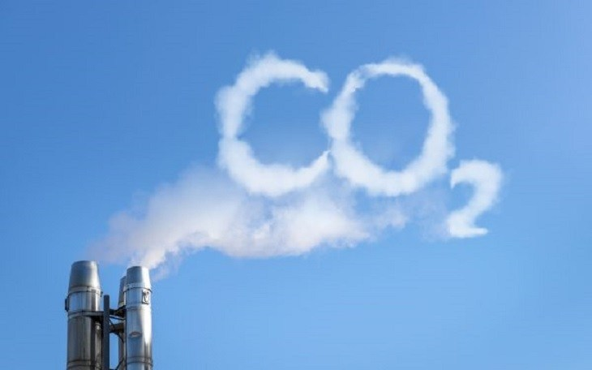
Repercusión en los ecosistemas
A partir de los cambios que va generando el calentamiento global; las modificaciones climáticas y del entorno empiezan a hacer presentes de igual manera; lo que implica una estrecha relación con las variantes de los ecosistemasdespués de la contaminación extensa y sus consecuencias.
Las condiciones de todos los hábitats se van haciendo críticas; por lo que cada una de las evoluciones se paraliza, conllevando a su degeneración y a tener que vivir en condiciones de supervivencia, adaptándose a un entorno desfavorable para muchos de los aspectos que nos identifica como seres vivos.
Fenómenos climáticos frecuentes
Por la variación implicada entre las diversidades de climas y por los cambios en el ciclo hidrológico; los gradientes de presión en la atmósfera van cambiando y con ello van generando corrientes de viento anómalas; haciendo que se dé de manera más frecuentes eventos catastróficos como huracanes; tornados o también tormentas eléctricas.
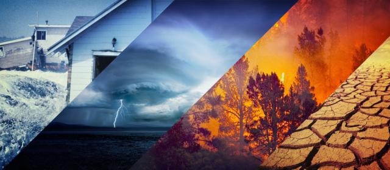
Sequías
Otro de los resultados que describe el constante efecto del calentamiento global es la aparición de sequías; aspectos naturales que impiden el correcto ciclo vital de la especie humana; especies vegetales y de la fauna.
Todo va de la mano, si no hay vegetación, los animales herbívoros no tendrían alimento lo que conllevaría a su desaparición; si estos desaparecen las especies carnívoras tampoco tendrían alimento y todos los seres de la tierra terminarían con la involución.
Cada una de estas transformaciones ambientales tienen un punto en común y es el calentamiento global; siendo este el factor fundamental al cual debemos atacar de frente; cuidando más el planeta y haciéndolo tener una máxima duración con hábitos totalmente ecológicos.
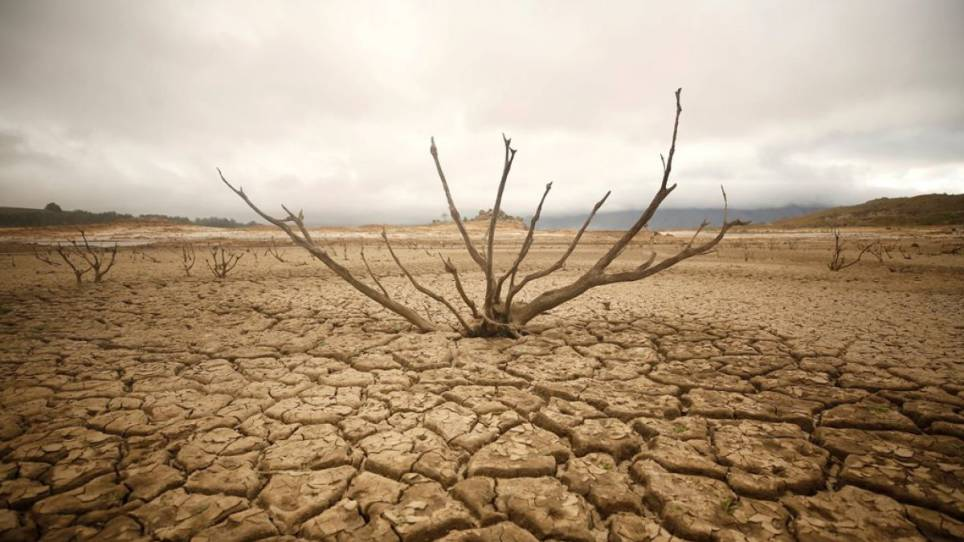
Soluciones para el calentamiento global
Uso de electricidad
Evita dejar las luces encendidas cuando sales o encenderlas cuando tienes la luz del día para iluminar lo que necesitas. Así mismo; no desperdicies la energía que además de costosa es altamente contaminante.
Preferible en el ejemplo de las cocinas ve optando por el gas natural o instalar termotanques solares si quieres calentar algo; son interesantes y además una opción muy económica no contaminante.
Desenchufa los aparatos eléctricos cuando no los estés usando, muchos de ellos desperdician la energía cuando se encuentran conectados y sin uso. Además de ser una forma de ahorrar; también será una buena forma de cuidar el ambiente.
Iluminación
Se ha descrito que más del 10% de la energía está dedicada exclusivamente a la iluminación; por lo que recurrir al uso de lámparas ecológicas o lo que es lo mismo, lámparas de bajo consumo energético va favoreciendo considerablemente este aspecto.
Estas por ser duraderas y con un rango mínimo de contaminación son ideales dado a que prolongan los períodos de recambio de las bombillas. También puedes colocar un sensor de movimiento para el encendido y apagado automático; representando una forma muy eficaz de ahorrar luz; energía y sobre todo vida útil de las lámparas.
Autos eléctricos
Para disminuir el consumo y exposición de dióxido de carbono emitido hacia la atmósfera es imprescindible reducir el uso de los combustibles fósiles tales como el petróleo y el carbón. Una opción factible para disminuirlo es evitar el uso de autos convencionales reemplazándolos por autos eléctricos.
Si es de difícil acceso, puedes recurrir a la alternativa de la caminata, la cual es una manera de cuidar tu salud y hacer ejercicios. Pero si se trata de distancias más largas, puedes hacer uso de la bicicleta ya que es un medio de transporte que no usa combustible y por ende es una manera eficaz de cuidar el entorno natural o también usar el transporte público.
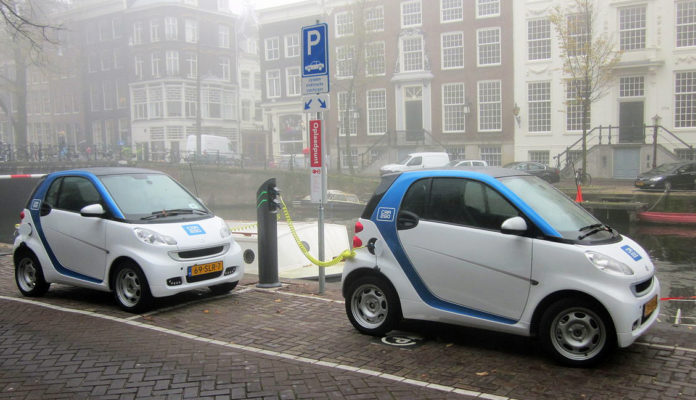
Materiales reciclables
Elige como preferencia los productos que vienen en envases de vidrio, en comparación con los de plástico, pues tienen mayor capacidad de ser reciclados. De igual modo, evita aquellos alimentos que vienen en bandejas de telgopor expandido; son mucho más contaminantes y tienen mayor predisposición a su quema con los rayos del sol.
En los supermercados exige bolsas de papel en vez de las comunes bolsas plásticas; esto ayudará a que vayan empleando este mecanismo de almacenaje contribuyendo al cuido de todo el medio ambiente.
No olvides aprovechar las hojas de reciclaje; esto lo haces imprimiendo por ambas caras y utilizándolas todo lo que puedas antes de echarlas a la basura; ve prefiriendo aquellas hojas de menor gramaje ya que son quienes resultan menos contaminantes.
Al practicar todos estos hábitos; el planeta estará estableciendo un cambio notorio con respecto a la contaminación que hoy en día vive. Ten presente que el cambio comienza por la voluntad de cada quién.